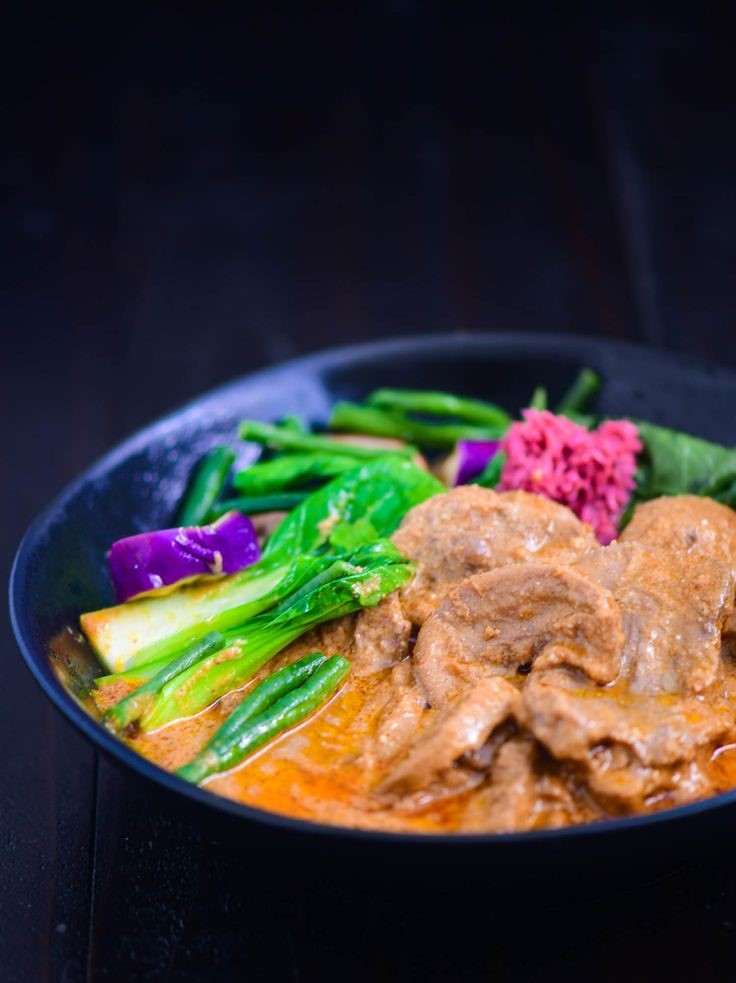

Lengua Kare-Kare Recipe Recipe
What is Lengua Kare-Kare Recipe?
Like your regular Kare-Kare, utilizes a thick, peanut stew. But to complement it, we use beef tongue instead of other beef cuts. Why? Well, because when cooked right, beef tongue or lengua can make for the most tender and satisfying ingredient. And you'll only be better able to savor this alongside the tasty bok choy, eggplant and other vegetables. Of course, to get it perfectly soft, we will need to put the work in with our pressure cooker. This will take some time, but the result is definitely incredible enough to inspire patience for every cooking process. Let's waste no more time, and get to cooking then!
Ingredients
4 lbs. beef tongue
3/4 cups peanut
3/4 cup almonds
2 bunches bok choy
1 Chinese eggplant
12 string beans
1 onion
5 cloves garlic
2 quarts water
32 ounces beef broth
4 tablespoons annatto oil
Salt to taste
Instructions / How to Cook
1. Pour water in a pressure cooker. Add ox tongue. Pressure-cook for 45 minutes. Remove the tongue afterwards and let it cool down. Take the skin off the tongue and then slice into serving pieces. Set aside.
2. Prepare the vegetables by steaming the eggplant and string beans for 10 minutes. Steam the bok choy for 5 minutes.
3. Prepare the peanuts and almonds by roasting on a pan until the color starts to turn brown. Put the nuts in a food processor and blitz until the mixture turns into a paste-like consistency. Set aside.
4. Heat annatto oil on a wok. Sauté garlic and onion.
5. Once the onion softens, add the sliced lengua. Sauté for 2 minutes.
6. Pour the beef broth into the wok. Cover and let boil. Continue boiling for 10 minutes in low heat setting.
7. Add the peanut and almond paste. Stir until all ingredients are well blended. Continue cooking uncovered for 7 minutes. Season with salt.
8. Transfer to a serving bowl and add the steamed vegetables. Serve with shrimp paste (bagoong alamang).
9. Share and enjoy!